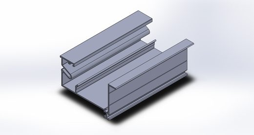
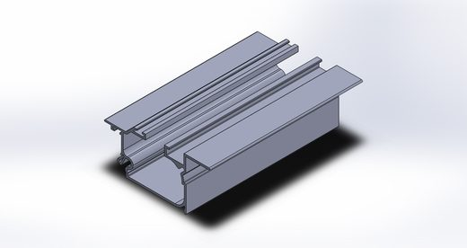
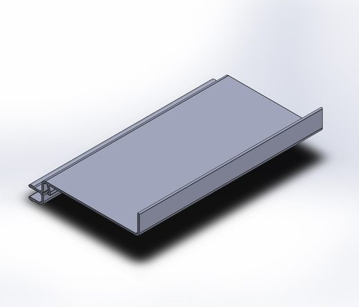
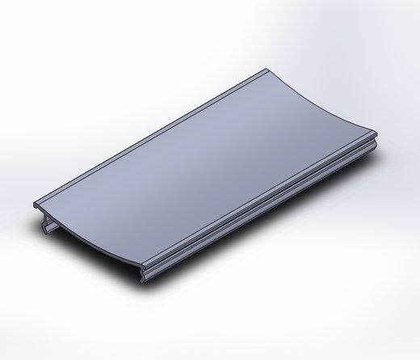
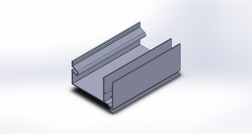
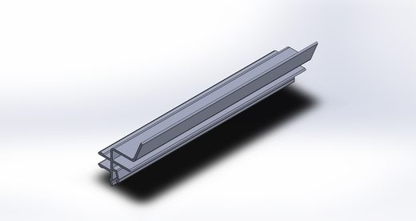
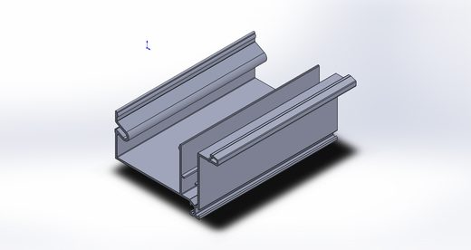
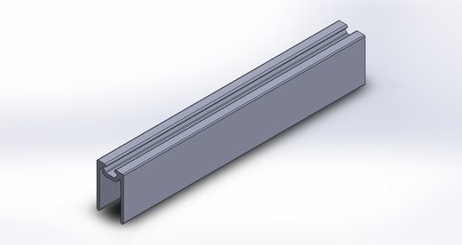

Skin Vista
Nome técnico de origem: SkinGlass — pele de vidro.
Inspirado em grandes fachadas comerciais, traz para projetos residenciais a estética de uma parede contínua de vidro — mas com abertura total. Diferente de soluções Maxim-Ar, não restringe o vão: fechado, parece pele de vidro; aberto, garante 100% de aproveitamento. Homologado para aplicações de até 30 andares.
1Tipologia e diferenciais
conteúdo consolidado100% vidro, abertura total
Não é sistema Maxim-Ar: abre horizontalmente, como se o vão fosse totalmente livre — folhas mantêm a mesma modulação da pele de vidro.
Abertura híbrida
Empilhamento de vidro configurável pelo usuário, inclusive em vãos com formato "L" ou "U".
Vedação em 4 barreiras + dreno
Vedação com borracha e escovinhas, sistema exclusivo de dreno interno — estanqueidade total contra intempéries.
Homologado até 30 andares
Testado e homologado pelo Instituto Falcão Bauer para aplicações de alta exigência estrutural.
Fachada Estrutural Glazing
Único sistema com abertura total nesse formato de fachada — vista limpa, sem interrupção visual do vidro.
2Limites e dados técnicos
dados de campo confirmados| Parâmetro | Especificação |
|---|---|
| Largura máxima do vão | Sem limite |
| Altura máxima do vão | Até 1500mm (requer indicação de paginação) |
| Quantidade de folhas | Sem limite (ideal até 7 pares por empilhamento) |
| Largura máxima da folha | 1200mm (ideal ~700mm) — respeitar aproveitamento de chapa (±1200mm largura/altura) |
| Peso do vidro — 8mm | 20 kg/m² |
| Peso do alumínio | 5 kg/m × perímetro |
Dados necessários para orçamento
- Largura do vão
- Altura do vão
- Nº de folhas móveis e fixas
- Cor do vidro
- Cor do alumínio
3Perfis utilizados
Perfis compartilhados com a categoria portas robustas e perfis exclusivos de fechamento. Fichas individuais na biblioteca de perfis.14 perfis — Compartilhados com portas robustas: 4 · Exclusivos: 10
Compartilhados com portas robustas (4)


Exclusivos (10)










4Detalhe de montagem
a preencherSequência de montagem em elaboração
Passo a passo de instalação da fachada glazing e travamento das folhas será adicionado conforme desenhos liberados.
5Detalhe de usinagem
a preencherEspecificações de corte e furação em elaboração
Cotas de corte e furação por perfil serão adicionadas nesta seção.